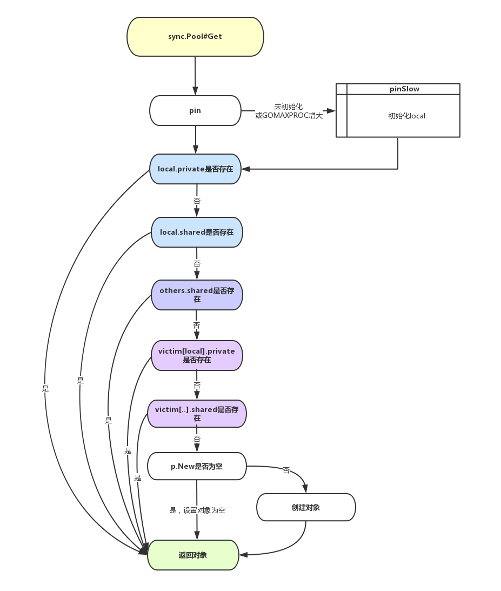

golang源码解读之sync.pool
开始
golang程序常常被用在高并发场景下，但是由于golang内建的GC机制会影响应用的性能，为了减少GC，golang提供了对象重用的机制，也就是sync.Pool对象池。 sync.Pool是可伸缩的，并发安全的，可以被看作是一个存放可重用对象的值的容器。 设计的目的是存放已经分配的但是暂时不用的对象，在需要用到的时候直接从pool中取。
GPM模型
在讲golang sync.pool库之前，我们需要对goroutine的GPM调度策略有一个概念。
-
G（Goroutine）：我们所说的协程，为用户级的轻量级线程，每个Goroutine对象中的
sched保存其上下文信息 -
M（Machine） ：对内核级线程的封装，数量对应真实的CPU数（真正干活的对象）
-
P（Processor） ：即为G和M的调度对象，用来调度G和M之间的关联关系，其数量可通过GOMAXPROCS()来设置，默认为核心数
Golang对于并发处理采用的是多线程模型。通过暴露轻量级的协程goroutine（用户级线程）供用户调用，封装内核级线程，用户级线程到内核级线程的调度由runtime负责。不同goroutine上下文切换时，完全在用户态，节约资源消耗。

每个Processor对象都拥有一个LRQ（Local Run Queue），未分配的Goroutine对象保存在GRQ（Global Run Queue ）中，等待分配给某一个P的LRQ中，每个LRQ里面包含若干个用户创建的Goroutine对象，同时Processor作为桥梁对Machine和Goroutine进行了解耦，也就是说Goroutine如果想要使用Machine需要绑定一个Processor才行，上图中共有两个M和两个P也就是说我们可以同时并行处理两个goroutine。
sync.pool源码
本文基于golang1.14。
Pool struct
type Pool struct {
noCopy noCopy
local unsafe.Pointer // local fixed-size per-P pool, actual type is [P]poolLocal
localSize uintptr // size of the local array
victim unsafe.Pointer // local from previous cycle
victimSize uintptr // size of victims array
// New optionally specifies a function to generate
// a value when Get would otherwise return nil.
// It may not be changed concurrently with calls to Get.
New func() interface{}
}
noCopy是Sync包中常见的类型，在很多地方都有使用。它包含了一个空的结构体和两个方法。
type noCopy struct{}
func (*noCopy) Lock() {}
func (*noCopy) Unlock() {}
在执行go vet静态检查时，若存在对该字段的copy，会报错。
-
New func()定义的是当pool中对象被取完后，再次执行Get方法时，返回的默认对象。 -
local和localSize对应的是每个P(Processor)的poolLocal对象组成的数组及其大小。在这里，local是一个指向数组的指针。 -
victim和victimeSize是在go1.13版本才引入的用于优化原先因GC对所有sync.pool进行回收，导致的GC尖峰和STW时间损耗Victim Cache是一种缓存处理技术。所谓受害者缓存（Victim Cache），是一个与直接匹配或低相联缓存并用的、容量很小的全相联缓存。当一个数据块被逐出缓存时，并不直接丢弃，而是暂先进入受害者缓存。如果受害者缓存已满，就替换掉其中一项。当进行缓存标签匹配时，在与索引指向标签匹配的同时，并行查看受害者缓存，如果在受害者缓存发现匹配，就将其此数据块与缓存中的不匹配数据块做交换，同时返回给处理器。
from wikipedia
poolLocal Struct
type poolLocalInternal struct {
private interface{} // Can be used only by the respective P.
shared poolChain // Local P can pushHead/popHead; any P can popTail.
}
type poolLocal struct {
poolLocalInternal
// Prevents false sharing on widespread platforms with
// 128 mod (cache line size) = 0 .
pad [128 - unsafe.Sizeof(poolLocalInternal{})%128]byte
}
这里的poolLocal就是Pool中local指向的切片组成变量。它由poolLocalInternal和pad两个成员变量组成。
pad是为了解决**伪共享( false sharing ) **。
CPU的缓存是以缓存行(cache line)为单位进行缓存的，当多个线程修改不同变量，而这些变量又处于同一个缓存行时就会影响彼此的性能。例如：线程1和线程2共享一个缓存行，线程1只读取缓存行中的变量1，线程2修改缓存行中的变量2，虽然线程1和线程2操作的是不同的变量，由于变量1和变量2同处于一个缓存行中，当变量2被修改后，缓存行失效，线程1要重新从主存中读取，因此导致缓存失效，从而产生性能问题。
from wikipedia
poolLocalInternal结构中由private和shared字段，分别保存每个localPool的私有对象和共享列表对象。其中shared对象的实现在golang1.13版本时从原先的Mutex+Slice换成了现在的lock-free的数据结构poolChain
poolChain
type poolChain struct {
// head is the poolDequeue to push to. This is only accessed
// by the producer, so doesn't need to be synchronized.
head *poolChainElt
// tail is the poolDequeue to popTail from. This is accessed
// by consumers, so reads and writes must be atomic.
tail *poolChainElt
}
type poolChainElt struct {
poolDequeue
next, prev *poolChainElt
}
type poolDequeue struct {
headTail uint64
vals []eface
}
可以看到poolChainElt类似于双向链表。同时，对于poolDequeque的操作都用到了atomic的方式实现，通过CAS巧妙地避免了操作被block。poolDequeque定义了三种操作：popHead、pushHead和popTail。其中，popHead和pushHead被用从当前P的localPool的共享池中获取对象和往当前P的localPool中插入对象。因为每个时间点对于单个P而言，都只有一个goroutine工作，所以poolDequeque可以看成是一个生产者；同时，popTail在从别的P中偷取对象时被调用（后文会提到该机制），可以看成是多消费者，所以popTail需要注意并发安全。此处以popTail为例（其余方法实现也类似）：
func (c *poolChain) popTail() (interface{}, bool) {
d := loadPoolChainElt(&c.tail)
if d == nil {
return nil, false
}
for {
// It's important that we load the next pointer
// *before* popping the tail. In general, d may be
// transiently empty, but if next is non-nil before
// the pop and the pop fails, then d is permanently
// empty, which is the only condition under which it's
// safe to drop d from the chain.
d2 := loadPoolChainElt(&d.next)
if val, ok := d.popTail(); ok {
return val, ok
}
if d2 == nil {
// This is the only dequeue. It's empty right
// now, but could be pushed to in the future.
return nil, false
}
// The tail of the chain has been drained, so move on
// to the next dequeue. Try to drop it from the chain
// so the next pop doesn't have to look at the empty
// dequeue again.
if atomic.CompareAndSwapPointer((*unsafe.Pointer)(unsafe.Pointer(&c.tail)), unsafe.Pointer(d), unsafe.Pointer(d2)) {
// We won the race. Clear the prev pointer so
// the garbage collector can collect the empty
// dequeue and so popHead doesn't back up
// further than necessary.
storePoolChainElt(&d2.prev, nil)
}
d = d2
}
}
func (d *poolDequeue) popTail() (interface{}, bool) {
var slot *eface
for {
ptrs := atomic.LoadUint64(&d.headTail)
head, tail := d.unpack(ptrs)
if tail == head {
// Queue is empty.
return nil, false
}
// Confirm head and tail (for our speculative check
// above) and increment tail. If this succeeds, then
// we own the slot at tail.
ptrs2 := d.pack(head, tail+1)
if atomic.CompareAndSwapUint64(&d.headTail, ptrs, ptrs2) {
// Success.
slot = &d.vals[tail&uint32(len(d.vals)-1)]
break
}
}
// We now own slot.
val := *(*interface{})(unsafe.Pointer(slot))
if val == dequeueNil(nil) {
val = nil
}
// Tell pushHead that we're done with this slot. Zeroing the
// slot is also important so we don't leave behind references
// that could keep this object live longer than necessary.
//
// We write to val first and then publish that we're done with
// this slot by atomically writing to typ.
slot.val = nil
atomic.StorePointer(&slot.typ, nil)
// At this point pushHead owns the slot.
return val, true
}
先看func (d *poolDequeue) popTail()方法。poolDequeue定义了一个结构体变量headTail，类型为uint64(便于进行CAS操作)，其中高32位保存链表Head地址，低32位保存链表Tail地址。当执行popTail方法时，先调用unpack方法，分别解析Head和Tail所在地址，以此判断该链表是否为空。若不为空，则取出尾端的值，同时tail前移一位并将原先尾端值置空(便于内存回收)。func (c *poolChain) popTail() 的处理也类似。方法实现本身不难，值得学习的是位运算以及各种原子操作以保证free-lock。
值得一提的是，此处同时引入两种结构体poolChain和poolDequeue的原因是poolDequeue结构体成员vals的限制。该参数用于存储对象值，但其实现其实是一个长度固定的数组。若直接采用poolDequeue实现localPool则很难很好的设置数组长度(过长导致空间浪费，过短又导致存储大小受限)，由于Slice扩展空间时是新申请地址并对值进行拷贝，所以就没法保存其地址。所以此处引入poolChain对象，以便于对localPool实现动态大小控制。
func (c *poolChain) pushHead(val interface{}) {
d := c.head
if d == nil {
// Initialize the chain.
const initSize = 8 // Must be a power of 2
d = new(poolChainElt)
d.vals = make([]eface, initSize)
c.head = d
storePoolChainElt(&c.tail, d)
}
if d.pushHead(val) {
return
}
// The current dequeue is full. Allocate a new one of twice
// the size.
newSize := len(d.vals) * 2
if newSize >= dequeueLimit {
// Can't make it any bigger.
newSize = dequeueLimit
}
d2 := &poolChainElt{prev: d}
d2.vals = make([]eface, newSize)
c.head = d2
storePoolChainElt(&d.next, d2)
d2.pushHead(val)
}
从该段代码中可以看到， 一开始，它会使用长度为8的poolDequeue做存储，一旦这个队列满了，就会再创建一个长度为16的队列，以此类推，只要当前的队列满了，就会新创建2*n的poolDequeue做存储。如果当前的poolDequeue消费完，就会丢弃(此处实现类似于Slice)。
Pool
再看Pool的执行方法：
func (p *Pool) Get() interface{} {
if race.Enabled {
race.Disable()
}
l, pid := p.pin()
x := l.private
l.private = nil
if x == nil {
// Try to pop the head of the local shard. We prefer
// the head over the tail for temporal locality of
// reuse.
x, _ = l.shared.popHead()
if x == nil {
x = p.getSlow(pid)
}
}
runtime_procUnpin()
if race.Enabled {
race.Enable()
if x != nil {
race.Acquire(poolRaceAddr(x))
}
}
if x == nil && p.New != nil {
x = p.New()
}
return x
}
-
如果
private不是空的，那就直接从pravite中拿 -
如果
private是空的，那就从shared结构中取Head，同时将Headpop掉 -
如果
shared也是空的，那就调用getSlow方法，从别的P的shared中偷一个，偷不到的话，就从victimeCache中找一个 -
如果还是没有，就调用
New方法，新建一个对象
func (p *Pool) pin() (*poolLocal, int) {
pid := runtime_procPin()
s := atomic.LoadUintptr(&p.localSize) // load-acquire
l := p.local // load-consume
if uintptr(pid) < s {
return indexLocal(l, pid), pid
}
return p.pinSlow()
}
func (p *Pool) pinSlow() (*poolLocal, int) {
// Retry under the mutex.
// Can not lock the mutex while pinned.
runtime_procUnpin()
allPoolsMu.Lock()
defer allPoolsMu.Unlock()
pid := runtime_procPin()
// poolCleanup won't be called while we are pinned.
s := p.localSize
l := p.local
if uintptr(pid) < s {
return indexLocal(l, pid), pid
}
if p.local == nil {
allPools = append(allPools, p)
}
// If GOMAXPROCS changes between GCs, we re-allocate the array and lose the old one.
size := runtime.GOMAXPROCS(0)
local := make([]poolLocal, size)
atomic.StorePointer(&p.local, unsafe.Pointer(&local[0])) // store-release
atomic.StoreUintptr(&p.localSize, uintptr(size)) // store-release
return &local[pid], pid
}
从pin和pinSlow来看，如果当前的pid在PoolLocal数组中，即pid < p.localSize，那么直接返回pid对应的localPool对象；否则，说明当前execution状态的P比之前多，所以调用pinSlow方法重新建local, localSize对象。值得注意的是，在pinSlow方法中，先写入local后写入localSize，在pin中，先读取localSize的值，再读取local的值。 注意Pool的实现中使用了runtime_procPin()方法，它可以将一个goroutine死死占用当前使用的P，不允许其它goroutine抢占，这样它就可以自由的使用shard中和这个P相关的localPool，不必担心竞争的问题，除非调用runtime_procUnpin 释放。
func (p *Pool) getSlow(pid int) interface{} {
// See the comment in pin regarding ordering of the loads.
size := atomic.LoadUintptr(&p.localSize) // load-acquire
locals := p.local // load-consume
// Try to steal one element from other procs.
for i := 0; i < int(size); i++ {
l := indexLocal(locals, (pid+i+1)%int(size))
if x, _ := l.shared.popTail(); x != nil {
return x
}
}
// Try the victim cache. We do this after attempting to steal
// from all primary caches because we want objects in the
// victim cache to age out if at all possible.
size = atomic.LoadUintptr(&p.victimSize)
if uintptr(pid) >= size {
return nil
}
locals = p.victim
l := indexLocal(locals, pid)
if x := l.private; x != nil {
l.private = nil
return x
}
for i := 0; i < int(size); i++ {
l := indexLocal(locals, (pid+i)%int(size))
if x, _ := l.shared.popTail(); x != nil {
return x
}
}
// Mark the victim cache as empty for future gets don't bother
// with it.
atomic.StoreUintptr(&p.victimSize, 0)
return nil
}
getSlow方法实现了从其他P的shared中“偷取”对象的逻辑。
在整个pool包的init函数中， 向 GC 注册 poolCleanup 函数，在每次TWS之前都会运行该函数。
func poolCleanup() {
// This function is called with the world stopped, at the beginning of a garbage collection.
// It must not allocate and probably should not call any runtime functions.
// Because the world is stopped, no pool user can be in a
// pinned section (in effect, this has all Ps pinned).
// Drop victim caches from all pools.
for _, p := range oldPools {
p.victim = nil
p.victimSize = 0
}
// Move primary cache to victim cache.
for _, p := range allPools {
p.victim = p.local
p.victimSize = p.localSize
p.local = nil
p.localSize = 0
}
// The pools with non-empty primary caches now have non-empty
// victim caches and no pools have primary caches.
oldPools, allPools = allPools, nil
}
主要功能是将当前victim清空，再把本地local的池化对象赋值给victim ，最后把local清空。以此实现 victim cache的机制。Pool中的对象可能会在两次GC周期内被释放，而不是原先的一个GC周期。
Sync.Pool中Get/Put逻辑

最后
通过以上的解读，我们可以看到，sync.Pool的Get方法并不会对获取到的对象值做任何的保证，因为放入本地池中的值有可能会在任何时候被删除，但是不通知调用者。放入共享池中的值有可能被其他的goroutine“偷走”。 所以对象池严格意义上来说是一个临时的对象池，适用于储存一些会在goroutine间分享的临时对象。主要作用是减少GC，提高性能。在Golang中最常见的使用场景是fmt包中的输出缓冲区。